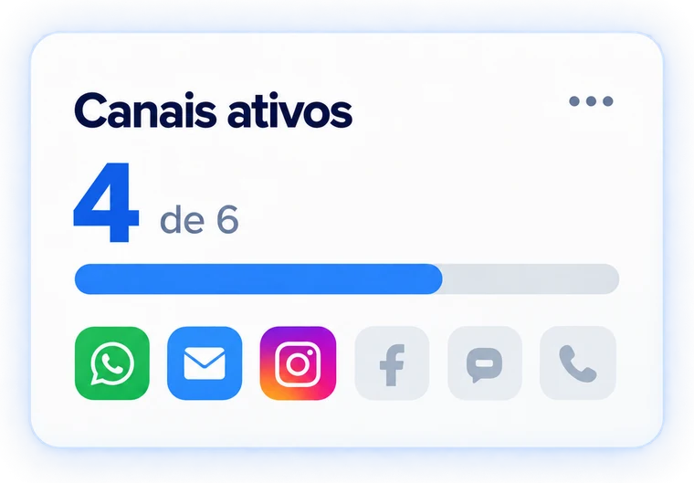

Chamados multicanal
WhatsApp, redes sociais, e-mail e telefone.
Tickets, filas e SLASistema de chamados
Centralize solicitações, distribua tickets entre equipes e acompanhe cada chamado do primeiro contato até a resolução.

Mais de 800 clientes confiam em nós


Organize solicitações, distribua tickets e acompanhe toda a operação em tempo real. Agende uma demonstração gratuita.
Reúna solicitações de WhatsApp, e-mail, redes sociais e outros canais em uma única operação.

Organize cada solicitação como um ticket e encaminhe automaticamente para a equipe ou agente responsável.
Acompanhe chamados novos, em andamento e resolvidos sem depender de planilhas ou controles paralelos.
Por canal, período, fila ou agente.
Prazos de atendimento e resolução cumpridos.
Tempo médio de atendimento e de espera.
Chamados resolvidos por agente e por equipe.

Automatize as primeiras interações, responda solicitações recorrentes e encaminhe para um atendente quando necessário.
WhatsApp, redes sociais, e-mail e telefone.
Histórico, status, filas e responsáveis.
Encaminhe solicitações para a equipe certa.
Acompanhe desempenho e indicadores.
Automatize etapas do atendimento.
É a ferramenta que registra cada solicitação de cliente como um chamado, com número, responsável e status. Assim nada se perde entre conversas e a equipe sabe o que está novo, em andamento ou resolvido.
Cada contato recebido por WhatsApp, e-mail, redes sociais ou telefone vira um ticket. O sistema encaminha o ticket para a fila da equipe certa, guarda o histórico da conversa e mede o tempo até a resolução, que aparece nos dashboards.
Sim. Com a API oficial do WhatsApp integrada à Cxpress, a mensagem do cliente abre um chamado automaticamente. A IA pode fazer a triagem inicial e o chamado segue para o setor responsável.
Confira se ele recebe chamados de todos os canais que seus clientes usam, se distribui por filas e prioridades, se guarda o histórico de cada cliente e se mostra SLA, TMA e TME em tempo real. Vale também avaliar a automação com IA e o suporte na implementação.
Preencha os dados e continue a conversa com um especialista no WhatsApp.
Pedido enviado. Abrimos a conversa com um especialista numa nova aba. Se ela não abriu, toque aqui.
Carregando o formulário…